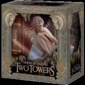

|

"The Lord of the Rings: The Two Towers" (2002 - 214m)
SINOPSE
42 MINUTOS DE CENAS NOVAS E REEDITADAS ACRESCENTADAS PELO REALIZADOR PETER JACKSON
Bonus:
GOLLUM BOOKLET E DVD
. Como bónus um emocionante DVD, desvenda a criação do coleccionado de O Senhor
dos Anéis
. Criando Gollun - um booklet de 44 páginas ilustrando a evolução do personagem
Gollum
EXCLUSIVO E COLECCIONÁVEL GOLLUM COMO "SMÉAGOL"
. Criado especificamente para a edição de coleccionador em DVD de O Senhor dos
Anéis - As Duas Torres
Depois da sua luta cataclísmica com o Balrog, Gandalf (Ian McKellen) ressurge como Gandalf, o Branco, e relembra a Aragorn que o seu destino é unir o povo de Rohan ao último bastião da resistência humana: o reino de Gondor.
Entretanto, Merry (Dominic Monaghan) e Pippin (Billy Boyd), os dois hobbits que haviam sido capturados, conseguem escapar aos Urûk-hai usando a sua própria astúcia e fugir para a misteriosa Floresta de Fangorn, onde encontram um inesperado aliado entre as árvores milenares: Barba de Árvore, um pastor de árvores vivo cuja floresta é dizimada por Saruman.
Em viagens paralelas, a Irmandade confronta exércitos e emboscadas inimagináveis, servindo de testemunho às lendárias maravilhas e à irredutível força do seu povo. Juntos terão de enfrentar as poderosas forças que emergem das duas torres: Orthanc, em Isengard, onde o perverso feiticeiro Saruman criou um mortífero exército 10.000 vezes mais poderoso; e a fortaleza de Sauron em Barad-dûr, no coração do tenebroso território de Mordor.
REALIZADOR
Peter Jackson
INTÉRPRETES
Elijah Wood, Ian McKellen, Viggo Mortensen, Liv Tyler, Sean Astin, Cate Blanchett, Billy Boyd, Dominic Monaghan, Orlando Bloom, John Rhys-Davies, Christopher Lee.
|
VIDEO
Widescreen 2.35:1 anamórfico
AUDIO
Inglês Dolby Digital 5.1 EX
Inglês DTS ES 6.1 Surround
Inglês Dolby Surround
LEGENDAS
Português
Inglês
OPÇÕES ESPECIAIS
DISCO 1 e 2
EDIÇÃO ESPECIAL ALARGADA DO FILME
. Quatro comentários áudio do filme pelo realizador e autores do argumento, elenco, equipas de produção e design, com mais de 40 participantes, incluindo Peter Jackson, Fran Walsh, Philippa Boyens, Barrie M. Osborne, Richard Taylor, Andrew Lesnie, Howard Shore, Jim Rygiel e Joe Letteri e o
elenco incluindo Elijah Wood, Sean Astin, John Rhys-Davies, Billy Boyd, Dominic Monaghan, Orlando Bloom, Christopher Lee, Sean Bean, Miranda Otto, Brad Dourif, Andy Serkis, Bernard Hill e muitos mais.
DISCO 3
OS APÊNDICES PARTE TRÊS - A AVENTURA CONTINUA...
- Cinco documentários originais mostrando a adaptação do livro a argumento, as origens da Terra Média, a concepção artística da Terra Média, uma visita à Weta Workshop e uma análise de fundo à forma como se criou e se deu vida ao Gollum.
- Dois mapas interactivos: o Atlas da Terra Média e a Nova Zelândia como a Terra Média
- Galerias de Imagens com comentários áudio. (Inclui um arquivo com mais de 1500 imagens)
DISCO 4
OS APÊNDICES PARTE QUATRO - A BATALHA PELA TERRA MÉDIA COMEÇA
- Oito documentários originais mostrando a rodagem de As Duas Torres, os efeitos visuais, a montagem, a música e o som, os treinos dos duplos e das lutas e uma visita à Weta Digital.
- Demonstração sonora interactiva da Batalha do Desfiladeiro do Elmo
- Galerias de Imagens com comentários áudio. (Inclui um arquivo de cerca de 300 imagens)
DISCO 5
DOCUMENTÁRIO
DISCOS/LADOS
5 discos de 1 lado
ESTÚDIO
The Saul Zaentz Company
WingNut Films
New Line Cinema
DISTRIBUIÇÃO
LNK Video Lda.
SITE OFICIAL
www.lordoftherings.net
|